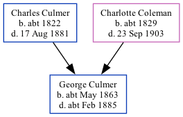

George Culmer cMay 1863 - c1885
[ Home ] | [ Calendar ] | [ Surnames Index ] | [ Family History ]The child of Charles Culmer (a farm waggoner) and Charlotte Coleman (a pauper)George Culmer, the great-great-uncle of Nigel Horne, was born in Monkton, Kent, England c. May 18631,2,3,4 and baptized there on Jun 14, 1863.
Throughout his life, he lived at The Street, St Nicholas-at-Wade, Kent, England on Apr 2, 18716; and in Chislet, Kent, England in 18812.
He died c. Feb 1885 in Thanet, Kent, England5.
Parents
- Charles was born c. 1822
- Charlotte was born c. 1829
Citations
- 1871 England Census Online publication - Provo, UT, USA: The Generations Network, Inc., 2004.Original data - Census Returns of England and Wales, 1871. Kew, Surrey, England: The National Archives of the UK (TNA): Public Record Office (PRO), 1871. Data imaged from the National
- 1881 England Census Online publication - Provo, UT, USA: The Generations Network, Inc., 2004. 1881 British Isles Census Index provided by The Church of Jesus Christ of Latter-day Saints © Copyright 1999 Intellectual Reserve, Inc. All rights reserved. All use is subject to the
- England & Wales births 1837-2006 - Findmypast
- England & Wales, FreeBMD Birth Index, 1837-1915 Online publication - Provo, UT, USA: The Generations Network, Inc., 2006.Original data - General Register Office. England and Wales Civil Registration Indexes. London, England: General Register Office. © Crown copyright. Published by permission of the Cont
- England & Wales deaths 1837-2007 - Findmypast
- 1871 England, Wales & Scotland Census - Findmypast (was age 7 and the son of the head of the household)
Media
England & Wales births 1837-2006 - BMD/B/1863/2/AZ/000283/059
England & Wales deaths 1837-2007 - BMD/D/1885/1/AZ/000092/082
Family Tree
Generated by ged2site. Last updated on Nov 13, 2024